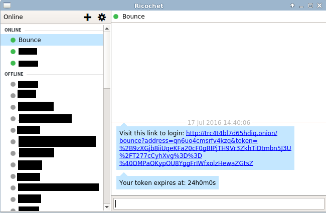

Hi! This is a prototype application that let's you login with Ricochet! Simply enter your Ricochet Id to receive a code.
Bounce is an experimental authentication prototype. Bounce uses Ricochet as a means to offer authenticated pseudonyms!
This has several advantages over traditional user management solutions:
Bounce is fairly simple. First the user is asked for a ricochet id. Bounce then constructs an encrypted token and sends a message to the ricochet id. Finally the user copies that id back to the site, and the site valids that the token is valid
Sure, the source code for Bounce is available at GitHub
Bounce is based on go-ricochet
Bounce is created by Sarah Jamie Lewis